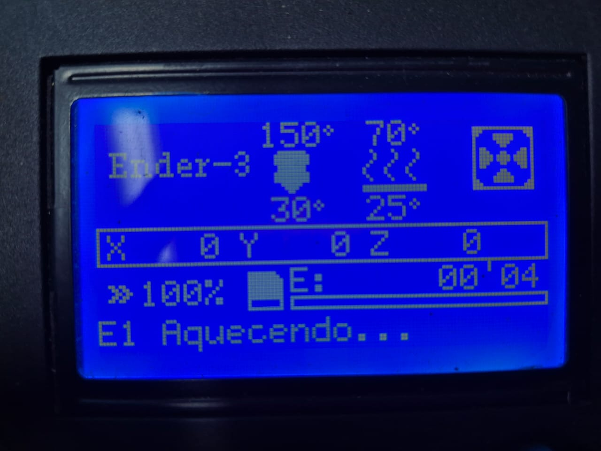

.gcode preparado para esta Ender 3.1. Ligue a Ender 3
O interruptor fica na lateral direita da base. Primeiro, observe a posição dele na visão ampla da impressora.

Veja agora o interruptor de perto. Pressione o lado marcado com I para ligar.

Aguarde a inicialização. Quando a máquina estiver pronta, ela mostrará a tela de informações fotografada abaixo.

2. Pressione o encoder para abrir o menu
O botão redondo do painel é o encoder. Pressione-o uma vez para sair da tela de informações e entrar no menu.

No menu, gire o encoder para navegar. Quando a opção desejada estiver destacada, pressione o encoder para selecioná-la.
3. Aqueça a Ender 3
Antes de colocar o filamento, aqueça o bico e a mesa. No menu principal, gire o encoder até Temperatura e pressione.
Selecione Pre-aquecer PLA. No submenu seguinte, mantenha Pre-aquecer PLA selecionado e pressione o encoder. Essa opção aquece o bico e a mesa.
Depois da confirmação, a tela de informações mostra que a Ender 3 está aquecendo. Aguarde as temperaturas subirem antes de colocar o filamento.

4. Coloque o filamento
A extrusora fica na parte superior esquerda da máquina. Na fotografia, o conjunto está circulado em amarelo e a trava que libera o filamento está marcada em vermelho.

O GIF mostra como apertar a trava. Mantenha-a pressionada enquanto introduz o filamento.

Com a trava pressionada, coloque a ponta do filamento no furo mostrado abaixo. Empurre o filamento até ele entrar no guia e seguir em direção ao hotend.

Continue avançando o filamento até uma pequena quantidade de material sair pelo bico aquecido. Isso confirma que ele percorreu todo o guia.

5. Selecione o arquivo G-code
Depois de inserir o filamento, a Ender 3 estará novamente na tela inicial de informações. Pressione o encoder para entrar no menu principal.
Dentro do menu, gire o encoder até Select from SD Card e pressione-o novamente para abrir a lista de arquivos.
A lista mostra os arquivos .gcode do cartão. nome_do_arquivo.gcode e nome_do_arquivo_2.gcode representam arquivos genéricos; os demais são exemplos encontrados no material da máquina.
Gire o encoder até destacar o arquivo correto. Confira o nome e pressione o encoder para selecioná-lo.
6. Mova a seleção para “Imprimir”
A caixa começa com Cancelar selecionado. Gire o encoder para mover a seleção para o lado, até Imprimir ficar destacado. Depois, pressione o encoder para confirmar.
7. Acompanhe o aquecimento e a primeira camada
Depois da confirmação, a tela de informações mostra as temperaturas e o estado de aquecimento. Aguarde a Ender 3 atingir os valores definidos no G-code.
Quando as temperaturas forem atingidas, a Ender 3 fará os movimentos iniciais e começará a depositar o filamento. Observe sem tocar na máquina.
Observe a primeira camada
- o filamento deve aderir à mesa;
- as linhas devem ser contínuas;
- o material não deve acompanhar o bico;
- o bico não deve raspar a superfície.
Resumo do processo
- Ligar a Ender 3 e aguardar a tela de informações.
- Pressionar o encoder para abrir o menu.
- Selecionar Temperatura → Pre-aquecer PLA → Pre-aquecer PLA.
- Apertar a trava da extrusora e inserir o filamento no guia.
- Confirmar que o filamento sai pelo bico aquecido.
- Abrir Select from SD Card e selecionar o G-code.
- Mover a seleção para Imprimir e pressionar o encoder.
- Acompanhar o aquecimento e observar a primeira camada.